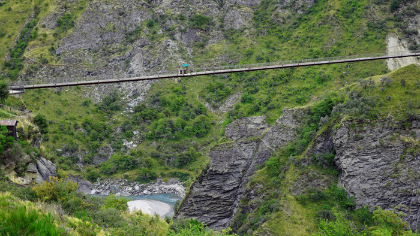

Skippers Canyon
Queenstown Tourist Location
Queenstown's Historic Mountain Canyon!
Skippers Canyon is a dramatic and historic canyon located
near Queenstown. The area is surrounded by steep cliffs,
rugged mountains, and the Shotover River, creating some of
the most impressive scenery in the Queenstown region.
The canyon has a strong connection to New Zealand's gold
mining history. Gold was discovered in the area during the
1860s, attracting miners and helping establish settlements
throughout the region. Today, visitors can still see
evidence of the area's mining past while exploring the
spectacular landscape.
Visitors can experience Skippers Canyon through guided
tours, scenic drives, hiking, and photography. The famous
Skippers Road winds through the mountains and provides
incredible views over the canyon and river. The narrow
road and steep terrain make guided tours a popular and
convenient way to explore the area.
Skippers Canyon is best suited to visitors interested in
adventure, history, and dramatic natural scenery. Because
the canyon is located outside Queenstown, visitors should
consider transport and tour costs when planning their trip.
Facts:
- Located near Queenstown
- Surrounded by dramatic cliffs and mountains
- The Shotover River runs through the canyon
- Important location in New Zealand's gold mining history
- Skippers Road travels through the canyon
- Popular for scenic tours and photography
- Known for adventure activities
- Offers spectacular views of the surrounding landscape
Costs:
- Access to Skippers Canyon: Varies depending on access and tour
- Guided canyon tours: approximately $150-$300 per person
- Adventure activities: approximately $100-$250 per person
- Estimated food costs: $10-$30 per person
- Transport from Queenstown: approximately $20-$50
- Estimated total visit cost: $30-$350+ per person